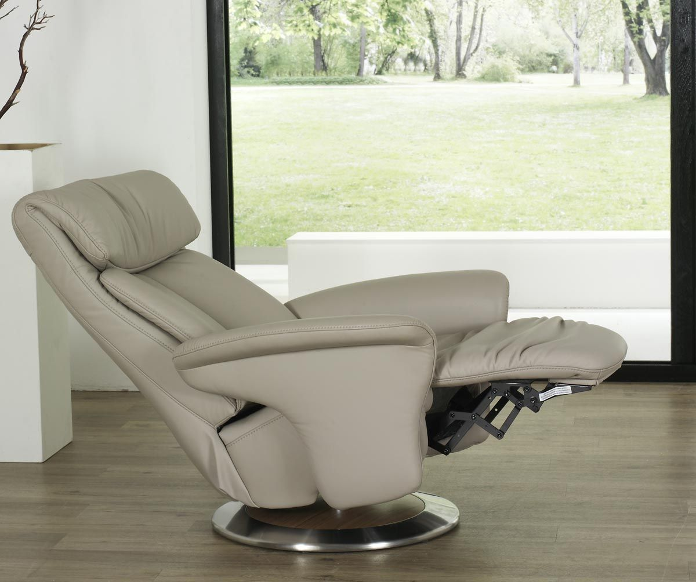

Easy Swing 7527 Lleva espumas inyectadas en el asiento, indeformables y eternas, que se adaptan al máximo a la estatura, confort y peso de cada persona. Tres tipos de sentada, suave, media y firme. Laterales de fibra de vidrio. Bloqueo de giro de seguridad para niños, puede ser manual, con 1 solo motor, 2 motores para graduar de forma independiente el respaldo del reposapiés, motor elevable Estructura metálica reforzada con brazos en contrachapados de madera de haya